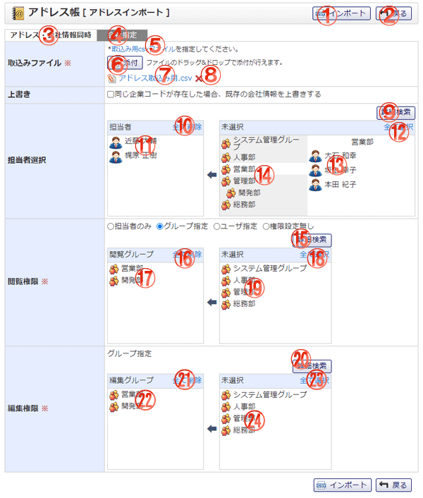

アドレス・会社情報のインポートを同時に行う画面です。アドレス情報をCSV形式のファイルで取り込みます。

機能説明
インポートボタンアドレスインポート確認画面へ遷移します。入力内容に不備がある場合エラーメッセージが表示されます。 |
戻るボタン遷移元の画面へ遷移します。 |
|---|---|
アドレス・会社情報同時タブ取り込み形式をアドレス・会社情報同時に変更します。それにより、入力・表示項目とcsvファイルの形式が変更されます。 |
会社指定タブ取り込み形式を会社指定に変更します。それにより、入力・表示項目とcsvファイルの形式が変更されます。 |
取込み用csvファイル取込み用csvファイルのサンプルをダウンロードします。 |
添付ボタンフォルダウィンドウが開きます。フォルダウィンドウでファイルを選択すると、添付ボタンの下にファイル名が表示されます。 |
ファイル名ファイルをダウンロードします。 |
削除アイコンファイルを削除します。 |
詳細検索ボタンユーザ選択ポップアップが表示されます。 |
全て削除ボタン担当者エリアに表示されている全てのユーザを未選択状態にします。 |
選択済ユーザユーザ名をクリックすることで、ユーザを未選択状態にします。 |
全て選択ボタン未選択エリアに表示されている全てのグループおよびユーザを担当者エリアに追加します。 |
未選択ユーザユーザ名をクリックすることで、ユーザを担当者エリアに追加します。 |
グループ名グループ名をクリックすることで、グループに所属するユーザが未選択エリアに表示されます。 |
詳細検索ボタングループ選択ポップアップが表示されます。 |
全て削除ボタン閲覧グループエリアに表示されている全てのグループを未選択状態にします。 |
選択済グループグループ名をクリックすることで、グループを未選択状態にします。 |
全て選択ボタン未選択エリアに表示されている全てのグループを閲覧グループエリアに追加します。 |
未選択グループグループ名をクリックすることで、グループを閲覧グループエリアに追加します。 |
詳細検索ボタングループ選択ポップアップが表示されます。 |
全て削除ボタン編集グループエリアに表示されている全てのグループを未選択状態にします。 |
選択済グループグループ名をクリックすることで、グループを未選択状態にします。 |
全て選択ボタン未選択エリアに表示されている全てのグループを編集グループエリアに追加します。 |
未選択グループグループ名をクリックすることで、グループを編集グループエリアに追加します。 |
表示・入力項目説明
取込みファイル
取込みファイルを選択します。
上書き
同じ会社情報が存在した場合、会社情報を上書きするかどうかを選択できます。
担当者選択
担当者を選択します。
閲覧権限
閲覧権限を選択します。[グループ指定][ユーザ指定]を選択した場合は対象のグループ、ユーザをリストから選択します。
編集権限
編集権限を選択します。選択された閲覧権限の値によって対象のグループやユーザの選択リストが表示され選択可能となります。